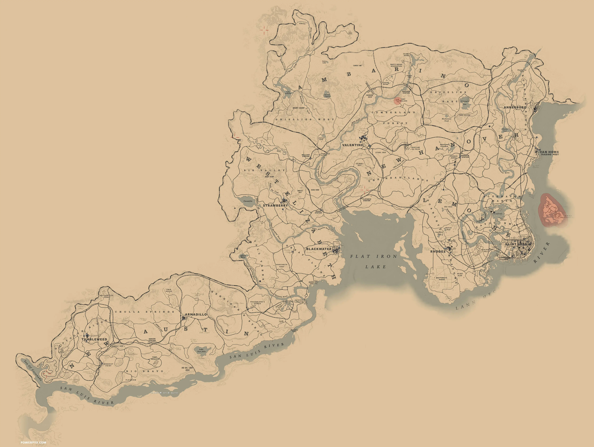

Gameplay
-
Exploración y mundo abierto
El juego tiene un vasto mundo lleno de ciudades, pueblos, montañas, bosques y ríos. Puedes viajar a caballo, en tren o en carro, y hay un sistema dinámico de clima y ciclo día-noche.
-
Misiones y narrativa
El juego sigue una historia principal con misiones que mezclan acción, sigilo y toma de decisiones. También hay muchas misiones secundarias con personajes memorables y situaciones inesperadas.
-
Combate y sigilo
El sistema de disparos incluye la mecánica de Dead Eye, que permite ralentizar el tiempo para marcar objetivos. Puedes usar pistolas, rifles, escopetas y armas cuerpo a cuerpo. También puedes optar por un enfoque sigiloso.
-
Interacciones y decisiones
Arthur puede interactuar con cualquier NPC del juego, eligiendo entre ser amable, amenazante o agresivo. Las decisiones afectan su honor y cambian cómo el mundo reacciona ante él.
-
Supervivencia y realismo
Debes alimentarte, cuidar a tu caballo, limpiar tus armas y administrar el dinero. La caza es importante para obtener recursos y vender pieles.
-
Actividades secundarias
Puedes jugar póker, blackjack, cazar recompensas, pescar, explorar tesoros, hacer duelos y mucho más.
Mapa
